Reestruturação do site Veratus
Prévia para aprovação, 14 de outubro de 2026. Nada foi publicado: o site no ar continua igual.
Prévia para aprovação, 14 de outubro de 2026. Nada foi publicado: o site no ar continua igual.
| Medido nas capturas | Site no ar | Prévia |
|---|---|---|
| Altura no celular (390 px) | 16,1 telas | 9,2 telas |
| Altura no computador (1440 px) | 10,1 telas | 8,4 telas |
| Espera antes do primeiro slide | abertura de até 2,6 s | nenhuma |
| Seções antes do rodapé | 8 | 4, mais a vista do relógio |
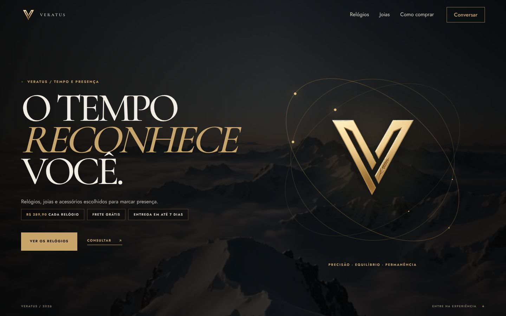
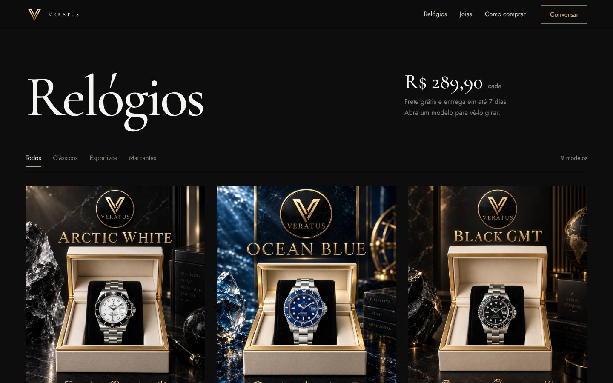
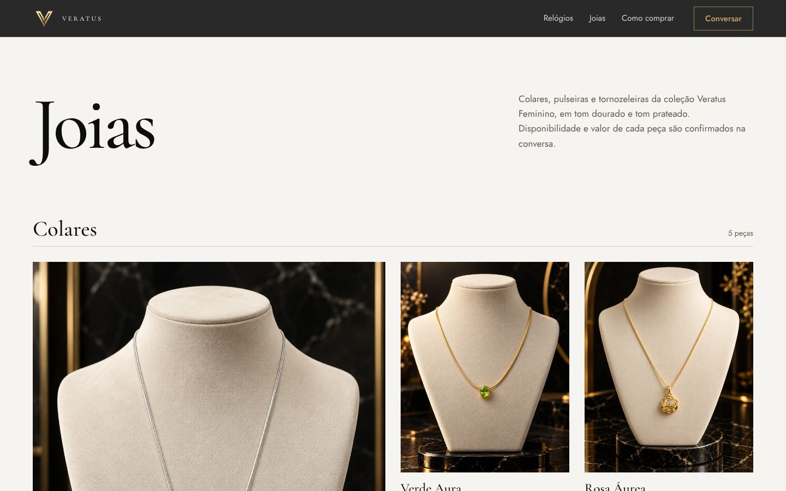
Ao abrir um relógio, ele sobe num palco escuro, apoiado num mostrador dourado. Conforme você rola o texto ao lado, a peça gira de um lado para o outro, a luz passa por ela e o mostrador do chão acompanha. No computador, o ponteiro também inclina a peça. Quem configurou o celular para menos movimento vê a imagem parada.
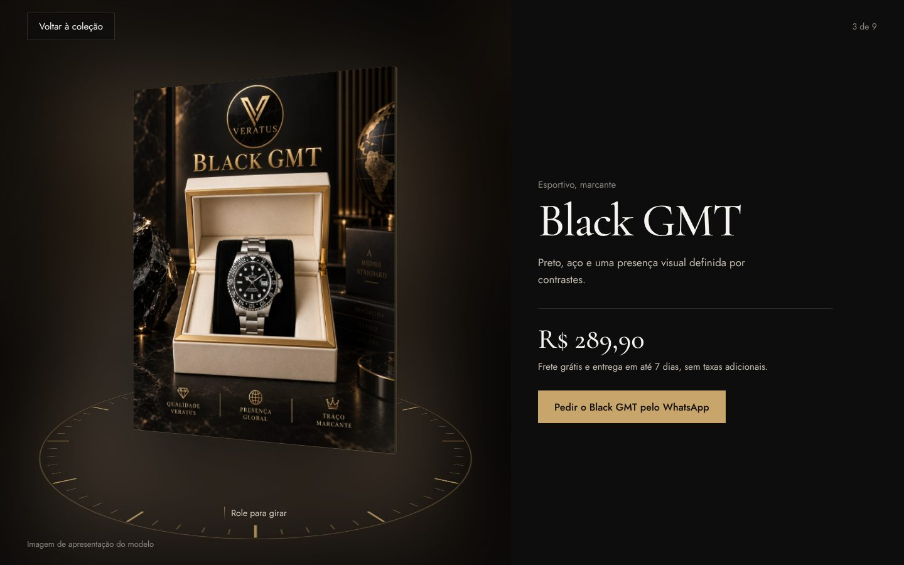
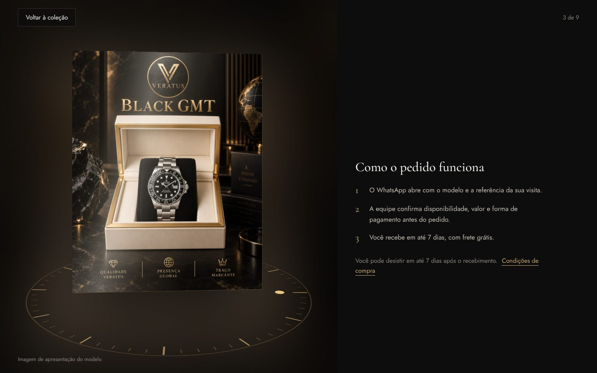
Gira o criativo inteiro, e não só o relógio, porque os criativos têm nome e símbolo de terceiros no mostrador. Ampliar o mostrador deixaria essa marca legível e em destaque. A regra de 26/09 para o 3D diz o contrário: sem nome ou símbolo de terceiros no mostrador. Quando chegarem as fotos reais, sem marca, o palco troca o painel pela sequência de 60 quadros do próprio relógio girando, como no brief de 26/09.
Cada modelo ganha um link próprio, que abre direto no palco: veratus.onrender.com/?relogio=ocean-blue. Serve para anúncio, Direct e bio.
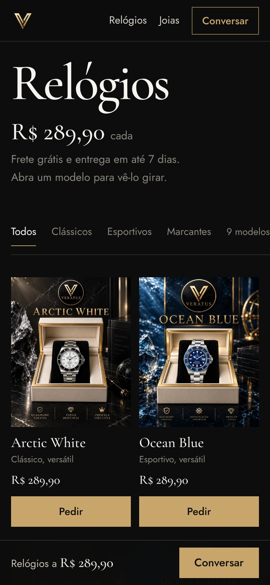
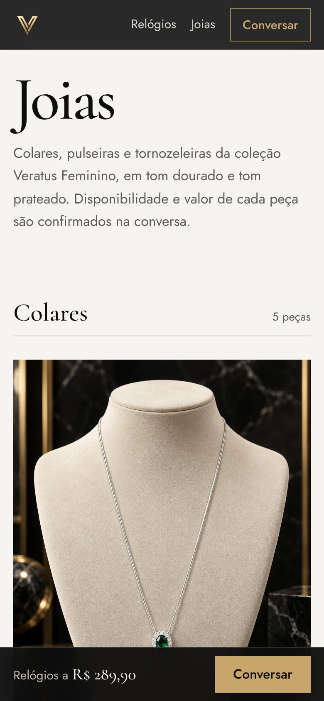
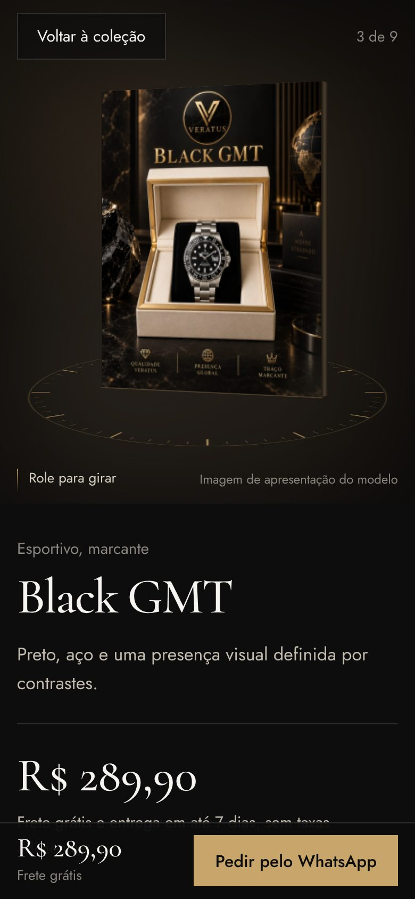
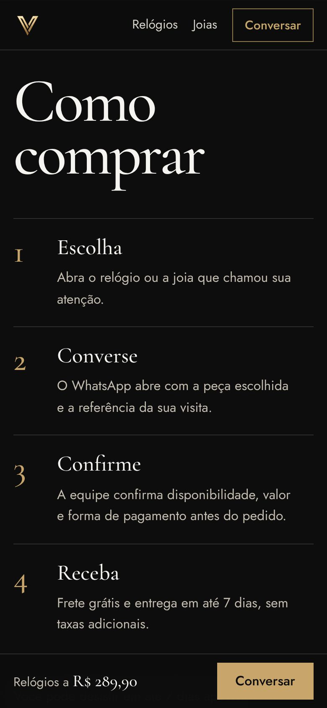
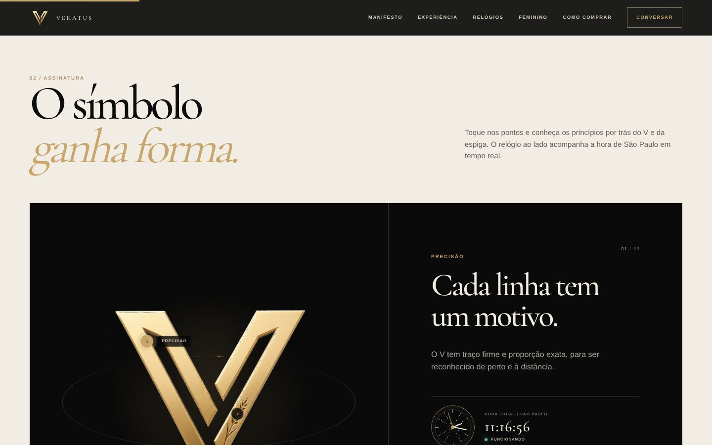
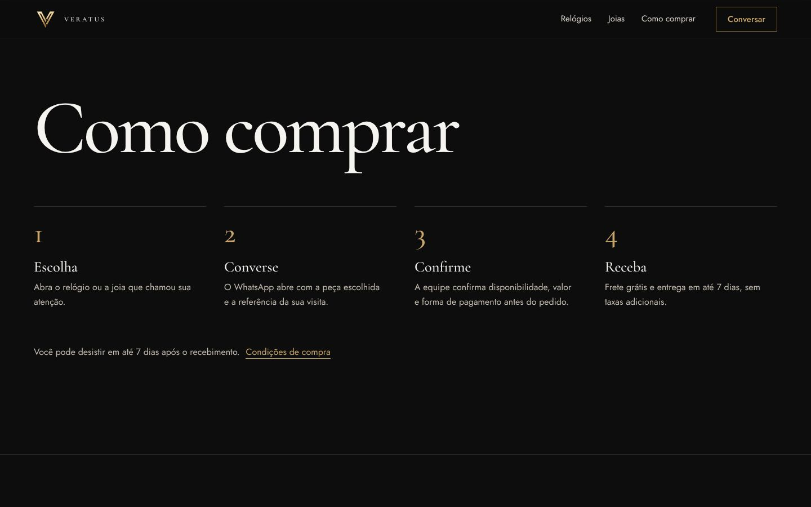
Nada disto foi feito ainda:
Arquivos: design/reestruturacao-2026-10/ (index.html, estilo.css, vitrine.js, capturas/ e este projeto). A pasta design/ não entra no Docker do Render.